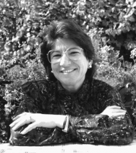

Please note: the AAS Obituaries are temporarily being hosted on this website while their full content is being ingested into the PubPub publishing platform newly adopted by the Bulletin of the American Astronomical Society. When the migration is complete, your existing links will take you to the final, migrated content. Contact peter.williams@aas.org with any questions.
Janet Akyuz Mattei (1943-2004)
As director of the American Association of Variable Star Observers for thirty years, Janet Mattei led the organization through a series of major improvements and in the process, helped and influenced amateur and professional astronomers around the world. Having successfully tackled many challenges, however, Janet lost her battle with acute myelogenous leukemia on 22 March 2004.
One of five children of Bella and Baruk Akyüz, Janet was born on 2 January 1943 in Bodrum, Turkey and received her pre-collegiate education there. She attended Brandeis University from 1962 until 1965 on a full Wein Scholarship, earning a BA in General Science. After eighteen months of supervising a cardiopulmonary laboratory, in 1967 she returned to Turkey to teach physics and mathematics in a high school, and then entered graduate school at Turkey's Ege University. Janet learned of the summer scholarships available at the Maria Mitchell Observatory on Nantucket, and applied to observatory director Dorrit Hoffleit for the opportunity to come back to the United States and learn about variable stars. That summer (1969) she learned to love variable stars, became acquainted with the AAVSO, and met her future husband, Michael Mattei. In 1970, after she earned her master's degree in astronomy at Ege University, Janet entered the University of Virginia where she earned a second master's degree in 1972 with a thesis on T Tauri stars. After receiving her degree in Virginia, Janet married Mike Mattei and became an assistant to Margaret Mayall at AAVSO headquarters.
When Mayall decided to retire in 1973, the AAVSO Council asked Janet to assume the helm as director of the association. With such a sudden advance in her responsibilities, Janet had to rapidly learn the management side of running the organization as well as keep up with the day-to-day scientific activities - responding to requests for data, recording observations as pencil-points on paper charts, and predicting future maxima of long period variables. She accelerated a ten-year project to digitize all of AAVSO's archived as well as current data, without which a century of AAVSO observations would now be nearly inaccessible.
In the mid-1970s professional interest in the cataclysmic variables began to ramp up. When she received the first requests for an AAVSO visual observing campaign coordinated with observations by orbiting observatories as well as large ground based telescopes, Janet accepted the invitation as both an opportunity and a challenge. AAVSO observers responded marvelously and, coupled with Janet's astute forecasting of when cataclysmic variables were likely to brighten again, the program emerged as one of the major technical successes of her tenure. Many AAVSO members will never forget their excitement when France Córdova came to our Fall meeting in 1978 to announce to the astronomical world that X-rays from SS Cyg had been detected by HEAO-1 on the first occasion after the satellite reached orbit when AAVSO observers reported that the star was brightening to a maximum. It was a moment of tremendous pride for everyone, most of all for Janet. It was a success that was repeated frequently in over six hundred subsequent coordinated observing runs with various satellites. This success greatly increased the impact of AAVSO on current astronomical research, enhanced its reputation, and also provided a more immediate thrill for the observers than the ongoing commitment to monitor slowly varying stars.
The late 1970s and early 1980s were a period of substantial inflation in our nation's economy. Furthermore, staff turnover slowed progress with the data processing work, while observations coming to AAVSO from international variable star organizations and independent observers, especially from behind the iron curtain, were increasing rapidly. Faced with rising costs at the same time additional staff was needed to pursue the data processing problems, Janet reacted characteristically: she began taking night courses in management, data processing, fund raising, and other topics that could help her handle the AAVSO work load more efficiently. Nor was her formal education in astronomy quite complete, for during that difficult period she completed writing her dissertation and earned a PhD in astronomy from Ege University in 1982.
AAVSO's headquarters on Concord Avenue was increasingly crowded and also insecure, as the historical data were stored in a building that was vulnerable to fire. In August 1985 long-term AAVSO secretary and benefactor Clinton Banker Ford (BAAS, 1994:1602) solved these problems by donating a new headquarters building at 25 Birch Street in Cambridge. Janet managed the move into the AAVSO's present facilities masterfully, and then led planning for a dedication of the building combined with a celebration of the AAVSO's seventy-fifth anniversary. It is a measure of Janet's growth in stature in the professional community that Ricardo Giacconi, then director of the Space Telescope Science Institute, was the keynote speaker for the celebration and it was attended by the leaders of variable star organizations from a number of countries. The meeting marked a major turning point in the affairs of AAVSO as well as in Janet's own outlook. Substantially more confident in her abilities as a manager and leader of the organization, Janet never looked back.
Janet's international contacts, through her active participation in the International Astronomical Union (IAU), led her to participate in 1987 as one of the organizers of an IAU colloquium in Paris on the contribution of amateurs to astronomy, the first of her many later involvements in the field of professional-amateur (Pro-Am) cooperation. During that meeting, the Sociétié Astronomique de France (SAF) honored Janet with their Centennial Award for her leadership in variable star astronomy and within the AAVSO. She received an invitation from the Vereniging voor Sterrenkunde, the variable star observers in Belgium for AAVSO to hold its first European meeting in Brussels in July 1990. The meeting proved a huge success, and was followed in 1997 by a second AAVSO European meeting in Sion, Switzerland and a Pan-Pacific meeting in 2003 in Hawaii. Through Janet's leadership, AAVSO reached out to the observers who were already supporting the association with their observations.
One of Janet's strong interests was in education. Using a grant from the National Science Foundation, she led efforts to create Hands-On Astrophysics (HOA) based largely on variable stars and AAVSO data. Though it took several years to develop, HOA became the basis for a number of popular teacher workshops and is sure to lead many high school students into careers in science. Janet also helped many future professionals in astronomy, including Karen Meech and Peter Garnavich, and a few in other areas, by providing opportunities for them to work at headquarters during their studies or during an intermission in their formal schooling.
Janet was active in, and honored by, other professional and amateur organizations. A member of the American Astronomical Society (AAS), she received the AAS's George van Biesbroeck award in 1993, served on the AAS Annenberg Award Committee (1994-1997) and served as the first chair of the AAS Professional Amateur Cooperation Committee. Also in 1993, the Astronomical League with their Leslie Peltier Award honored Janet for her leadership of the AAVSO and contributions to variable star astronomy. Janet was elected a director of the Astronomical Society of the Pacific (ASP) and served six years in that capacity (1994-2000), co-chairing at least one Pro-Am workshop with the ASP. She was a member of three IAU Commissions over her thirty-five years of membership in that organization. In 1995, Janet was honored by the award of the Royal Astronomical Society's Jackson-Gwilt Medal and was the first recipient of the Giovanni Battista Lacchini Award for collaboration with amateur astronomers from Unione Astrofili Italiana. To honor her professional achievements, an asteroid was named for her (11695 Mattei). She always felt that these awards honored not just of her own work, but also the contributions of the members and observers who make up the AAVSO community.
Janet Mattei left a very different AAVSO than the one she took over in 1973. From 150,000 observations arriving annually and being handled on paper, now 500,000 arrive each year and are mostly processed and posted automatically. The association has a substantial endowment and owns its headquarters building in Cambridge, Massachusetts. The historical archive has been put into usable form, following two multi-year investments in digitization and validation. The activities of the AAVSO have been extended to include notifying space and ground observatories that particular objects are erupting and to capturing short-lived gamma ray burst afterglows. The organization's ties to those with similar missions around the world have been strengthened and, increasingly, the AAVSO's International Variable Star Database incorporates their data.
Janet's final illness was followed, through email bulletins, by hundreds of her friends and colleagues around the world. Characteristically, during a remission-and-recovery time between treatments, Janet reached out by phone and email to many of her AAVSO associates and friends, and resumed her habit of sending appropriate cards for special occasions. The more than 200 email "memoriam" notes posted on the AAVSO web site after her death show that all who knew her, even if only briefly, considered her a friend, a mentor, or a fine example of a scientist and leader.
Obituary written by: Thomas R. Williams (Rice University), Lee Anne Willson (Iowa State Universtiy)
BAAS Citation: BAAS, 2004, 36, 1680
SAO/NASA ADS Bibcode: 2004BAAS...36.1681W